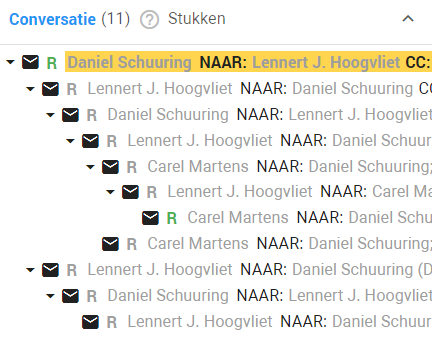
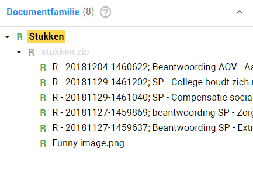

Wanneer u een document opent kan het zijn dat deze documenten gerelateerd zijn aan andere documenten. Denk hierbij bijvoorbeeld aan een email met bijlages. Het is van belang deze relaties tussen de documenten te controleren, immers kan door de combinatie van twee bestanden bijvoorbeeld een persoonsgegeven gecreed worden. Je zult dan hoogstwaarschijnlijk de documenten dan anders moeten lakken om dit te voorkomen.
Aangezien ZyLAB ONE veel informatie bijhoudt over de geüploade documenten is het mogelijk om in het bewerkingsdashboard te zien of een document voortkomt uit een ander document. U kunt bijvoorbeeld zien dat een plaatje uit een Word document komt, dat het Word document is verstuurd als bijlage in een email, van deze email kunt u de voorgaande emails ook lezen.
Zo wordt het makkelijk gemaakt om bijvoorbeeld de oorzaak van een fout terug te vinden, omdat u gewoon de mailtjes terug kunt lezen. U kunt deze informatie terugvinden wanneer u een document hebt geopend in het Bewerkingsdashboard.
Aan de linkerzijde ziet u 2 vlakken: Conversatie en Documentfamilie.
Bij Conversatie ziet u de voor- en nagaande mailtjes wanneer u een email hebt geopend.

Bij Documentfamilie ziet u de gerelateerde bestanden van het bestand dat u hebt geopend. Bijvoorbeeld bijlages die bij een email hebben gezeten.

U kunt klikken op het gewenste bestand of email in de Conversatie of Documentfamilie tabel om te navigeren hiernaartoe.